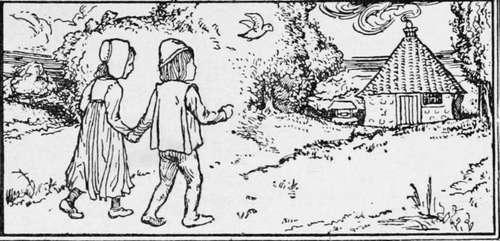

Hansel And Grethel
Description
This section is from the book "Household Tales by Brothers Grimm", by Brothers Grimm. Also available from Amazon: Household Tales by Brothers Grimm.
Hansel And Grethel
There was once a poor man, who was a woodman, and went every day to cut wood in the forest. One day as he went along, he heard a cry like a little child's: so he followed the sound, till at last he looked up a high tree, and on one of the branches sat a very little child. Now its mother had fallen asleep, and a vulture had taken it out of her lap and flown away with it, and left it on the tree. Then the woodcutter climbed up, took the little child down, and found it was a pretty little girl; and he said to himself, " I will take this poor child home, and bring her up with my own son Hansel." So he brought her to his cottage, and both grew up together: he called the little girl Grethel, and the two children were so very fond of each other that they were never happy but when they were together.
But the woodcutter became very poor, and had nothing in the world he could call his own; and indeed he had scarcely bread enough for his wife and the two children to eat. At last the time came when even that was all gone, and he knew not where to seek for help in his need. Then at night, as he lay on his bed, and turned himself here and there, restless and full of care, his wife said to him, "Husband, listen to me, and take the two children out early to-morrow morning; give each of them a piece of bread, and then lead them into the midst of the wood, where it is thickest, make a fire for them, and go away and leave them alone to shift for themselves, for we can no longer keep them here." "No, wife," said the husband, "I cannot find it in my heart to leave the children to the wild beasts of the forest; they would soon tear them to pieces." "Well, if you will not do as I say," answered the wife, " we must all starve together." And she would not let him have any peace until he came into her hard-hearted plan.
Meantime the poor children too were lying awake restless, and weak from hunger, so that they heard all that Hansel's mother said to her husband. "Now," thought Grethel to herself, "it is all up with us": and she began to weep. But Hansel crept to her bedside, and said, "Do not be afraid, Grethel, I will find out some help for us." Then he got up, put on his jacket, and opened the door and went out.
The moon shone bright upon the little court before the cottage, and the white pebbles glittered like daisies on the green meadows. So he stooped down, and put as many as he could into his pocket, and then went back to the house. "Now, Grethel," said he, "rest in peace! " and he went to bed and fell fast asleep.
Early in the morning, before the sun had risen, the woodman's wife came and awoke them. "Get up, children," said she, " we are going into the wood; there is a piece of bread for each of you, but take care of it, and keep some for the afternoon." Grethel took the bread, and carried it in her apron, because Hansel had his pocket full of stones; and they made their way into the wood.
After they had walked on for a time, Hansel stood still and looked towards home; and after a while he turned again, and so on several times. Then his father said, "Hansel, why do you keep turning and lagging about so? move on a little faster." "Ah, father," answered Hansel, " I am stopping to look at my white cat, that sits on the roof, and wants to say good-bye to me." " You little fool! " said his mother, " that is not your cat; it is the morning sun shining on the chimney-top." Now Hansel had not been looking at the cat, but had all the while been lingering behind, to drop from his pocket one white pebble after another along the road.
When they came into the midst of the wood the woodman said, " Run about, children, and pick up some wood, and I will make a fire to keep us all warm." So they piled up a little heap of brushwood, and set it on fire; and as the flames burnt bright, the mother said, "Now set yourselves by the fire, and go to sleep, while we go and cut wood in the forest; be sure you wait till we come again and fetch you." Hansel and Grethel sat by the fireside till the afternoon, and then each of them ate their piece of bread. They fancied the woodman was still in the wood, because they thought they heard the blows of his axe; but it was a bough, which he had cunningly hung upon a tree, in such a way that the wind blew it backwards and forwards against the other boughs; and so it sounded as the axe does in cutting. Thus they waited till evening : but the woodman and his wife kept away, and no one came to fetch them.
When it was quite dark Grethel began to cry; but then Hansel said, " Wait awhile till the moon rises." And when the moon rose he took her by the hand, and there lay the pebbles along the ground, glittering like new pieces of money, and marking out the way. Towards morning they came again to the woodman's house, and he was glad in his heart when he saw the children again, for he had grieved at leaving them alone. His wife also seemed to be glad; but in her heart she was angry at it.
Not long afterwards there was again no bread in the house, and Hansel and Grethel heard the wife say to her husband, " The children found their way back once, and I took it in good part; but now there is only half a loaf of bread left for them in the house; to-morrow you must take them deeper into the wood, that they may not find their way out, or we shall all be starved." It grieved the husband in his heart to do as his selfish wife wished, and he thought it would be better to share their last morsel with the children; but as he had done as she said once, he did not dare now to say no. When the children heard all their plan, Hansel got up, and wanted to pick up pebbles as before; but when he came to the door, he found his mother had locked it. Still he comforted Grethel, and said, "Sleep in peace, dear Grethel! God is very kind, and will help us."
Early in the morning, a piece of bread was given to each of them, but still smaller than the one they had before. Upon the road Hansel crumbled his in his pocket and often stood still, and threw a crumb upon the ground. " Why do you lag so behind, Hansel ?" said the woodman; "go your ways on before." "Iam looking at my little dove that is sitting upon the roof, and wants to say good-bye to me." " You silly boy! " said the wife, " that is not your little dove; it is the morning sun, that shines on the chimney-top." But Hansel still went on crumbling his bread, and throwing it on the ground. And thus they went on still further into the wood, where they had never been before in all their life.
Continue to:
Tags
fairy tales, children's stories, brothers grimm, household tales